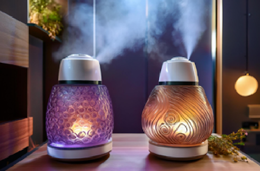

Interactive media systems designed for children, offering educational and entertainment content. These systems are also used in study areas to provide engaging and instructional material.
Transparent, high-tech walls that provide clear views while ensuring safety and privacy. These walls may include features like automatic tinting for glare reduction and soundproofing for a peaceful environment.
Sound management systems that enhance the auditory environment by providing soothing background sounds or noise reduction. These systems are useful for maintaining a peaceful nursery and an effective study space.
Automated scent dispensers that create a soothing environment with pleasant aromas. These dispensers can be tailored to create calming atmospheres in both nurseries and study areas.
A device or AI that reads poetry aloud, offering a relaxing and educational experience suitable for calming children or enriching study sessions.
An automated fireplace that adjusts flame intensity and temperature based on user preferences or ambient conditions, providing comfort and warmth in both nurseries and study areas.
An automated system that plays music tailored to mood and preference, enhancing both relaxation in the nursery and focus in the study area.
Smart chairs that adjust position, firmness, and support, optimizing comfort and ergonomics for both children in the nursery and individuals in the study area.